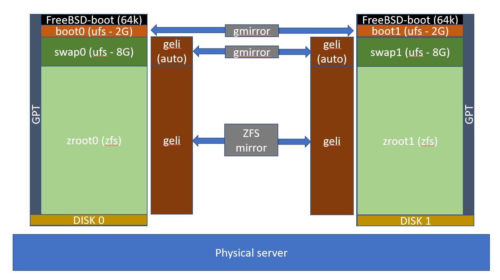

Installing a secure FreeBSD 12 server on a dedicated cloud machine¶
Problem Statement¶
This recipe describes how to install a secure FreeBSD Server on a bare-metal server to which you have but network access (no access to the console during installation and/or during boot). It is further assumed that the physical security of the machine cannot be fully guaranteed, hence encryption methods should be used to protect the server's data.
While the FreeBSD installer offers the possibility to automagically install an encrypted system, it is based on the assumption that you will have console access during boot to introduce the passkey - something not always possible. The proposed setup ensures a kernel-level software RAID-1 configuration (for data integrity/availability), operating on an encrypted filesystem using ZFS (for data confidentiality) and with an encrypted swap partition.
Concepts¶
The solution proposed by this recipe is based on the pattern of a two-stage booting process: a first boot in a basic (ufs) unencrypted partition which allows network ssh access (via key), followed by attaching the geli-encrypted filesystem (by introducing a password at command line) and the re-rooting of the running kernel to the encrypted filesystem, effectively re-booting the kernel from the new filesystem which is at this stage available un-encrypted to the kernel.
Tip
Re-rooting refers to the use of the reboot -r command (see man page): After changing vfs.root.mountfrom with kenv(1), reboot -r can be used to change the root filesystem while preserving kernel state.
The pattern can be further enhanced by hardening the first boot stage to only execute the mount sequence through ssh. Such hardening will increase security but will make rescue operations (that may have to be operated under stage 1 boot) harder. It is therefore not considered in this document.

Ingredients¶
To be able to execute this recipe, you will need a dedicated machine to which you have network access. The machine should have two equal-sized disks and enough memory to serve the corresponding disk capacity under zfs. The installation can be done either remotely (if the machine can network-boot on a FreeBSD copy) or through the console (if you have access to the console). How to boot to FreeBSD from the console is not covered in this document.
Note
The recipe has been tested on a dedicated server provided by https://www.hetzner.com/ as well on VirtualBox. The machine enjoyed 2X2TB hard disks, 32GB of ECC memory and an Intel Xeon processor. Hetzner offers a "rescue" system, network-booting to FreeBSD and assigning a temporary password.
The recipe therefore starts from a booted version of FreeBSD on your server that can be accessed from your network.
Warning
This installation guide is not for the faint hearted (but you already knew that if you are here). You need to really understand what you are doing to avoid catastrophic failure. You should be comfortable with FreeBSD sysadmin tasks and a patient and zen attitude. Expect the unexpected when installing an OS in a new environment (e.g. if you do install in Hetzner pay specific attention to configuring the network which requires a point-to-point configuration).
Inspect your System¶
Log-in to your network-booted FreeBSD image as root. Obtain initial information about your server's hardware .
Processor:
[root@rescue ~]$ sysctl -a hw.model
hw.model: Intel(R) Xeon(R) CPU E3-1246 v3 @ 3.50GHz
Memory:
[root@rescue ~]$ sysctl -a | grep hw.*mem
hw.physmem: 33950691328
hw.usermem: 33666101248
hw.realmem: 34359738368
hw.pci.host_mem_start: 2147483648
hw.cbb.start_memory: 2281701376
Network:
[root@rescue ~]$ ifconfig -a
re0: flags=8843<UP,BROADCAST,RUNNING,SIMPLEX,MULTICAST> metric 0 mtu 1500
options=8209b<RXCSUM,TXCSUM,VLAN_MTU,VLAN_HWTAGGING,VLAN_HWCSUM,WOL_MAGIC,LINKSTATE>
ether 44:44:44:44:44:44
inet 9.9.9.9 netmask 0xffffffc0 broadcast 9.9.9.127
media: Ethernet autoselect (1000baseT <full-duplex,master>)
status: active
nd6 options=29<PERFORMNUD,IFDISABLED,AUTO_LINKLOCAL>
Disks
[root@rescue ~]$ sysctl kern.disks
kern.disks: ada1 ada0
[root@rescue ~]$ camcontrol devlist
<WDC WD2000FYYZ-01UL1B2 01.01K03> at scbus0 target 0 lun 0 (pass0,ada0)
<WDC WD2000FYYZ-01UL1B2 01.01K03> at scbus1 target 0 lun 0 (pass1,ada1)
<AHCI SGPIO Enclosure 1.00 0001> at scbus2 target 0 lun 0 (ses0,pass2)
[root@rescue ~]$ diskinfo -v ada0 | head -n3
ada0
512 # sectorsize
2000398934016 # mediasize in bytes (1.8T)
[root@rescue ~]$ camcontrol identify ada0 | grep sector
sectors/track 63
sector size logical 512, physical 512, offset 0
LBA supported 268435455 sectors
LBA48 supported 3907029168 sectors
Physical sector sizes
Take note of your physical sector size: It is important to take note of the size of your physical sector (here 512 bytes) to ensure correct alignment when creating the ZFS partitions.
Example of 4K physical disk sectors:
[root@rescue ~]$ camcontrol identify ada0 | grep sector
sectors/track 63
sector size logical 512, physical 4096, offset 0
LBA supported 268435455 sectors
LBA48 supported 7814037168 sectors
Steps¶
Partition the disks¶
Following inspection of our system, we have recorded that the two disks are ada0 and ada1 with 512byte physical sectors.
We partition each disks in 4 partitions each, using GPT:
- a (very small) boot partition (for the ufs-bootcode)
- a 2GB ufs FreeBSD-root partition to be mirrored (for the pre-boot FreeBSD version)
- an 8GB swap partition (to be encrypted and mirrored)
- what remains goes in a FreeBSD-zfs partition (to be encrypted using
geliandgmirrororzfs mirror)
- what remains goes in a FreeBSD-zfs partition (to be encrypted using
for n in 0 1; do \
align=512 # change to 4k if necessary
gpart destroy -F ada${n} ;\
gpart create -s gpt ada${n} ;\
gpart add -b 64 -s 64k -t freebsd-boot ada${n} ;\
gpart add -l boot${n} -s 2G -t freebsd-ufs -a ${align} ada${n} ;\
gpart add -l swap${n} -s 8G -t freebsd-swap -a ${align} ada${n} ;\
gpart add -l zroot${n} -t freebsd-zfs -a ${align} ada${n} ;\
gpart bootcode -b /boot/pmbr -p /boot/gptboot -i 1 ada${n} ;\
done
[root@rescue ~]$ for n in 0 1; do \
> align=512 # change to 4k if necessary
> gpart destroy -F ada${n} ;\
> gpart create -s gpt ada${n} ;\
> gpart add -b 64 -s 64k -t freebsd-boot ada${n} ;\
> gpart add -l boot${n} -s 2G -t freebsd-ufs -a ${align} ada${n} ;\
> gpart add -l swap${n} -s 8G -t freebsd-swap -a ${align} ada${n} ;\
> gpart add -l zroot${n} -t freebsd-zfs -a ${align} ada${n} ;\
> gpart bootcode -b /boot/pmbr -p /boot/gptboot -i 1 ada${n} ;\
> done
gpart: arg0 'ada0': Invalid argument
ada0 created
ada0p1 added
ada0p2 added
ada0p3 added
ada0p4 added
partcode written to ada0p1
bootcode written to ada0
gpart: arg0 'ada1': Invalid argument
ada1 created
ada1p1 added
ada1p2 added
ada1p3 added
ada1p4 added
partcode written to ada1p1
bootcode written to ada1
Note that the errors noticed above can be safely ignored. They simply indicate that no partition table existed before to be deleted.
Prepare the mirrors for swap and boot¶
Mirroring for the ufs and swap partitions will happen using the geom_mirror kernel module. Encryption will be done using the geli system. We encrypt the swap partition dynamically while we encrypt the zfs partition with a strong password. The ZFS filesystem will perform its own mirroring. Do not forget to adapt the sector size for geli if necessary (e.g. 4096 instead of 512)!
[root@rescue /]$ kldload geom_mirror
[root@rescue /]$ gmirror label -b load -F swap /dev/gpt/swap0 /dev/gpt/swap1
[root@rescue /]$ gmirror label -b load -F boot /dev/gpt/boot0 /dev/gpt/boot1
[root@rescue /]$ geli onetime -d -e AES-XTS -l 256 -s 4096 /dev/mirror/swap
[root@rescue /]$ echo __Your Password Here__ > /tmp/pw
[root@rescue ~]$ geli init -s 512 -J /tmp/pw /dev/gpt/zroot0
Metadata backup for provider /dev/gpt/zroot0 can be found in /var/backups/gpt_zroot0.eli
and can be restored with the following command:
# geli restore /var/backups/gpt_zroot0.eli /dev/gpt/zroot0
[root@rescue ~]$ geli init -s 512 -J /tmp/pw /dev/gpt/zroot1
Metadata backup for provider /dev/gpt/zroot1 can be found in /var/backups/gpt_zroot1.eli
and can be restored with the following command:
# geli restore /var/backups/gpt_zroot1.eli /dev/gpt/zroot1
Install the stage-1 boot system (non-encrypted)¶
This is the (mirrored) non-encrypted system that is used to boot into and ssh to in order to allow attaching the encrypted zroot pool of ZFS before rebooting into the ZFS partition.
Prepare the filesystem¶
[root@rescue ~]$ newfs -U /dev/mirror/boot
/dev/mirror/boot: 2048.0MB (4194296 sectors) block size 32768, fragment size 4096
using 4 cylinder groups of 512.00MB, 16384 blks, 65536 inodes.
with soft updates
super-block backups (for fsck_ffs -b #) at:
192, 1048768, 2097344, 3145920
[root@rescue ~]$ tunefs -p /dev/mirror/boot
tunefs: POSIX.1e ACLs: (-a) disabled
tunefs: NFSv4 ACLs: (-N) disabled
tunefs: MAC multilabel: (-l) disabled
tunefs: soft updates: (-n) enabled
tunefs: soft update journaling: (-j) disabled
tunefs: gjournal: (-J) disabled
tunefs: trim: (-t) disabled
tunefs: maximum blocks per file in a cylinder group: (-e) 4096
tunefs: average file size: (-f) 16384
tunefs: average number of files in a directory: (-s) 64
tunefs: minimum percentage of free space: (-m) 8%
tunefs: space to hold for metadata blocks: (-k) 5240
tunefs: optimization preference: (-o) time
tunefs: volume label: (-L)
Check that soft update journaling is disabled! This will allow you to take live dumps.
Install the FreeBSD system¶
[root@rescue /]$ mount /dev/mirror/boot /mnt
[root@rescue /]$ fetch -o - http://ftp.freebsd.org/pub/FreeBSD/releases/amd64/12.1-RELEASE/base.txz | tar --unlink -xpJf - -C /mnt
[root@rescue /]$ fetch -o - http://ftp.freebsd.org/pub/FreeBSD/releases/amd64/12.1-RELEASE/lib32.txz | tar --unlink -xpJf - -C /mnt
[root@rescue /]$ fetch -o - http://ftp.freebsd.org/pub/FreeBSD/releases/amd64/12.1-RELEASE/kernel.txz | tar --unlink -xpJf - -C /mnt
Boot configuration¶
In order for the system to work correctly, specific kernel models need to be loaded at boot time and parameters set as follows:
cat <<EOF >>/mnt/boot/loader.conf
vfs.root.mountfrom="ufs:/dev/mirror/boot"
kern.geom.label.disk_ident.enable="0"
kern.geom.label.gptid.enable="0"
geom_mirror_load="YES"
geom_eli_load="YES"
zfs_load="YES"
EOF
[root@rescue ~]$ cat <<EOF >>/mnt/boot/loader.conf
> vfs.root.mountfrom="ufs:/dev/mirror/boot"
> kern.geom.label.disk_ident.enable="0"
> kern.geom.label.gptid.enable="0"
> geom_mirror_load="YES"
> geom_eli_load="YES"
> zfs_load="YES"
> EOF
Basic OS Configuration¶
Ensure the system knows what to mount upon boot:
[root@rescue /]$ echo /dev/mirror/boot / ufs rw 1 1 > /mnt/etc/fstab
[root@rescue /]$ echo /dev/mirror/swap.eli none swap sw 0 0 >> /mnt/etc/fstab
Create a basic configuration for this pre-boot OS (the file does not exist at this stage):
cat <<EOF >>/mnt/etc/rc.conf
# Pre-boot FreeBSD rc.conf
# basic system to allow booting into encrypted zfs
hostname="base-raw"
ifconfig_re0="DHCP" # MAKE SURE YOU USE THE RIGHT INTERFACE NAME HERE
sshd_enable="YES"
sendmail_enable="NONE"
cron_enable="NO"
EOF
Change the root password¶
[root@rescue /]$ chroot /mnt passwd root
Changing local password for root
New Password:
Retype New Password:
Setup timezone¶
[root@rescue /]$ chroot /mnt tzsetup
SSHd configuration¶
Configure the way to connect to your new FreeBSD server via SSH. Follow the results of your security risks analysis. The following setup is based on root having access but only via private key.
Start by allowing remote root logins:
[root@rescue /]$ echo "PermitRootLogin yes" >> /mnt/etc/ssh/sshd_config
[root@rescue /]$ echo "PasswordAuthentication no" >> /mnt/etc/ssh/sshd_config
[root@rescue /]$ echo "ChallengeResponseAuthentication no" >> /mnt/etc/ssh/sshd_config
and then generate the server\'s keys:
[root@rescue /]$ chroot /mnt /etc/rc.d/sshd onekeygen
Copy your key in the authorized_keys file (to allow to connect by key)
[root@rescue /]$ mkdir -p /mnt/root/.ssh
[root@rescue /]$ chmod 700 /mnt/root/.ssh
[root@rescue /]$ vi /mnt/root/.ssh/authorized_keys
Reboot and continue configuration¶
The time has come to reboot the server and see if it boots correctly from the new partition. Installation will continue from the newly booted server. Remember to login using your SSH key if you followed the above configuration.
[root@rescue /]$ reboot
Update FreeBSD¶
Ensure you are running the latest version of FreeBSD
$ freebsd-update fetch
$ freebsd-update install
and reboot in order to load the new kernel!
Install the stage-2 FreeBSD system (encrypted)¶
Boot into the freshly installed and updated FreeBSD base-raw system in order to continue with the installation of the main OS partition. Remember, encryption will take place using geli on the blk level and not under ZFS.
Attach encrypted partitions¶
We need to attach the partitions which are encrypted before creating the zpool.
root@base-raw:~ $ geli attach /dev/gpt/zroot0
Enter passphrase:
root@base-raw:~ $ geli attach /dev/gpt/zroot1
Enter passphrase:
Create the zfs pool¶
Alignment to sector size
It is recommended to set the ashift parameter based on your physical sector size to ensure correct alignment. For a sector size of 512 bytes (29) you should set it to 9 (default). For a sector size of 4096 (4k, 212) you should set it to 12. As usually hardware does not evolve in cloud servers, there is no point to set it to 12 just to be future proof as you would have done on you own hardware. You may also want to adjust any other relevant ZFS parameters.
root@base-raw:~ $ sysctl vfs.zfs.min_auto_ashift=9;
The zfs pool will hold the main filesystems where FreeBSD will be installed. The setup opts for a simple list of mount points. You may want to choose differently (like the default FreeBSD install) depending on the usage of the server.
root@base2-raw:~ $ zpool create -f -m none -o altroot=/mnt -o cachefile=/tmp/zpool.cache zpool mirror /dev/gpt/zroot0.eli /dev/gpt/zroot1.eli
Now create the filesystems we need:
root@base2-raw:~ $ zfs create -o mountpoint=/ zpool/root
Install the FreeBSD system¶
root@base2-raw:~ $ fetch -o - http://ftp.freebsd.org/pub/FreeBSD/releases/amd64/12.1-RELEASE/base.txz | tar --unlink -xpJf - -C /mnt
147 MB 10 MBps 14s
root@base2-raw:~ $ fetch -o - http://ftp.freebsd.org/pub/FreeBSD/releases/amd64/12.1-RELEASE/lib32.txz | tar --unlink -xpJf - -C /mnt
- 58 MB 10 MBps 06s
root@base2-raw:~ $ fetch -o - http://ftp.freebsd.org/pub/FreeBSD/releases/amd64/12.1-RELEASE/kernel.txz | tar --unlink -xpJf - -C /mnt
- 39 MB 9269 kBps 05s
Configure the stage-2 system¶
Basic settings¶
root@base2-raw:~ $ cp /boot/loader.conf /mnt/boot/loader.conf
root@base2-raw:~ $ cp /etc/rc.conf /mnt/etc/rc.conf
root@base2-raw:~ $ cp /etc/resolv.conf /mnt/etc/resolv.conf
root@base2-raw:~ $ cp /etc/ssh/ssh_host_* /mnt/etc/ssh/
root@base2-raw:~ $ cp /etc/ssh/sshd_config /mnt/etc/ssh/
root@base2-raw:~ $ mkdir -p /mnt/root/.ssh
root@base2-raw:~ $ chmod 700 /mnt/root/.ssh
root@base2-raw:~ $ cp /root/.ssh/authorized_keys /mnt/root/.ssh/
root@base2-raw:~ $ echo 'daily_status_gmirror_enable="YES"' >> /mnt/etc/periodic.conf
root@base2-raw:~ $ mkdir -p /mnt/xboot
root@base2-raw:~ $ chroot /mnt passwd root
Changing local password for root
New Password:
Retype New Password:
root@base2-raw:~ $ chroot /mnt tzsetup
Security Warning
Do not use the same password as for your stage-1 FreeBSD server. Remember that stage-1 boot relies on an unecrypted ufs filesystem. It is therefore possible that someone with access to the physical server may obtain the password file and reverse engineer your password.
You may now change the hostname in /mnt/etc/rc.conf to base instead of base-raw (or to whatever you like). This may help you understand the system you have ssh\'ed into.
#
# FreeBSD Encrypted Stage-2 Server Configuration
#
hostname="base"
ifconfig_re0="DHCP"
zfs_enable="YES"
#
# Daemons
#
sshd_enable="YES"
sendmail_enable="NONE"
ntpdate_enable="YES"
Edit the fstab file to mount the ufs boot partition to xboot
cat <<EOF >>/mnt/etc/fstab
/dev/mirror/boot /xboot ufs rw 1 1
/dev/mirror/swap.eli none swap sw 0 0
EOF
Prepare a script automatically decrypt and boot to stage 2¶
Create a script under /root/boot_stage2:
#!/bin/sh
set -x
geli attach gpt/zroot0
geli attach gpt/zroot1
kenv vfs.root.mountfrom="zfs:zpool/root"
echo "Ready to boot? press enter or Ctr-C to stop"
read a
# If you want to change your network configuration in the stage-2 system, you will need
# to clean up your network settings here (flush routes, etc.)
reboot -r
Use as sh /root/boot_stage2.
Boot the system to Stage-2¶
root@base-raw:/ $ zpool export zpool
root@base-raw:/ $ kenv vfs.root.mountfrom="zfs:zpool/root"
root@base-raw:/ $ reboot -r
Your connection will now drop. You should now ssh back to your new system!
Tip
In case you fail to connect to the newly booted system and you have no access to the console to debug the issue, you will need to request a reboot of your server. A frequent cause is badly configured networking (you are actually flying blind at this stage). Upon reboot, you will be booting to the Stage-1 system that will allow you to attach your two encrypted devices, import the zpool and mount the filesystem to edit the stage-2 configuration files.
Upgrade FreeBSD¶
Update the new installation to the latest patch level. Don\'t forget, we are running under the updated kernel already!
root@base:/ $ freebsd-update fetch
root@base:/ $ freebsd-update install
root@base:/ $ shutdown -r now
When the system comes up, log in to your Stage-1 system and run the script to boot into the Stage-2 system by supplying your password for each of the two encrypted partitions.
Post configuration of your Stage-2 FreeBSD server¶
You can now do the final configuration steps for your secure FreeBSD server.
Install the pkg system and basic packages¶
root@base:~ $ pkg update
The package management tool is not yet installed on your system.
Do you want to fetch and install it now? [y/N]: y
Bootstrapping pkg from pkg+http://pkg.FreeBSD.org/FreeBSD:12:amd64/quarterly, please wait...
Verifying signature with trusted certificate pkg.freebsd.org.2013102301... done
Installing pkg-1.14.6...
Extracting pkg-1.14.6: 100%
Updating FreeBSD repository catalogue...
Fetching meta.conf: 100% 163 B 0.2kB/s 00:01
Fetching packagesite.txz: 100% 6 MiB 6.6MB/s 00:01
Processing entries: 100%
FreeBSD repository update completed. 32006 packages processed.
All repositories are up to date.
root@base:~ $ pkg install -y bash ca_root_nss neoftech py37-speedtest-cli-2.1.2
Maintenance of your secure server¶
While it may run un-interrupted for years, a FreeBSD server is a pet: it requires regular attention to ensure that the system is upgraded to the right patch level or the right version to ensure the best possible security. Keeping your system up to date means
- (carefully) updating your installed packages to their latest versions;
- updating FreeBSD to its latest patch level;
- updating FreeBSD to the next major and/or minor version.
Applying patches to the secure FreeBSD means applying them both to the Stage-1 and Stage-2 system. Start by patching the Stage-2 system (freebsd-update fetch; freebsed-update install) , reboot to stage-1 and repeat the process. Reboot again to stage-1 and follow the steps to boot to stage-2. Your system is now updated.